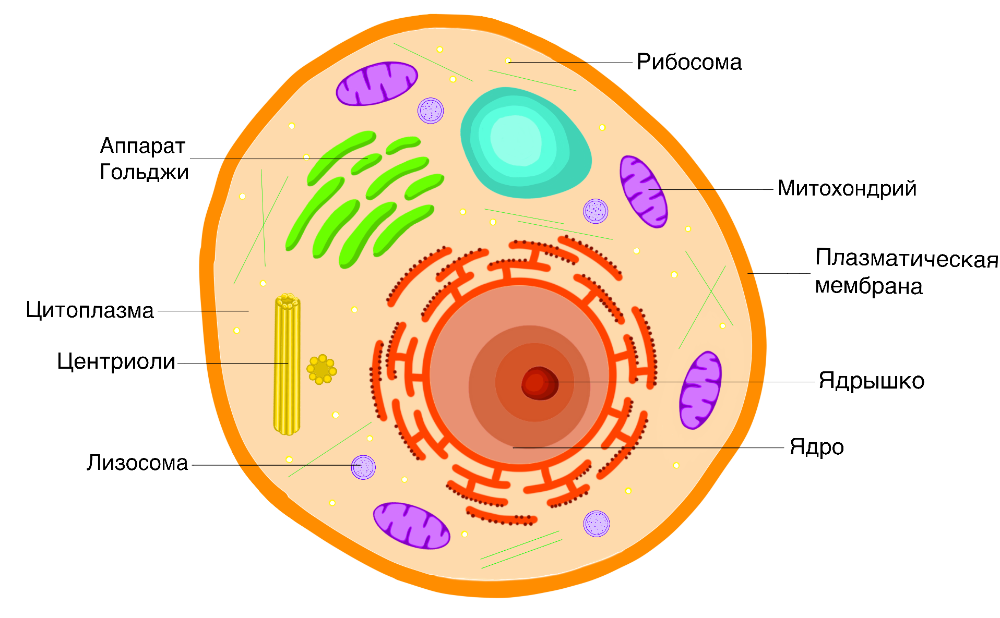

КЛЕТКА ЖИВОТНОГО

Состоит из:
- Плазматическая мембрана
- Ядро и ядрышко
- Цитоплазма
- Эндоплазматическая сеть
- Аппарат (комплекс) Гольджи
- Лизосомы
- Пищеварительные вакуоли и сократительные вакуоли – небольшие и многочисленные органеллы
- Митохондрии
- Рибосомы
- Клеточный центр (центриоли)
- Гликоген – резервный углевод
Признаки животной клетки:
- Эукариотическая клетка
- Отсутствие вакуолей, хлоропластов и клеточной стенки
- Запасной углевод гликоген
- Клеточный центр есть у всех
- Есть гликокаликс
- Способность к фагоцитозу и пиноцитозу
На Главную